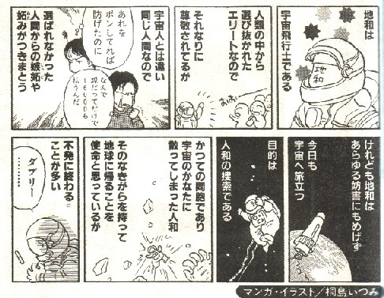
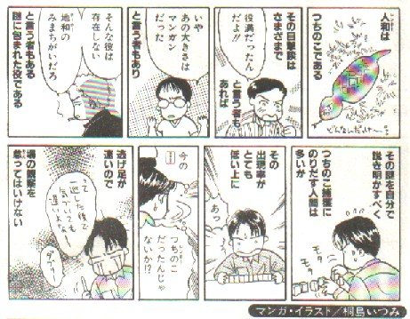

Hands 和了役。
（３）地和
中国の古文献「麻雀牌譜」に、「間家(シェンチャ＝子)、起手(チーショー＝配牌)に順子あり、雀頭あり、すでに等張(トンチャン＝聴牌)。荘家(チョワンチャ)の第一打牌での和了を地和とす。地の宜しきに合す。よろしく満門(マンメン=満貫)に賀すべし」とある。
この親の第１ツモ牌を天牌、親の第１打牌を地牌と称する。天牌によるアガリが天和。アガリでなければ返す手で地牌を打つ。この地牌によるロンアガリが地和である（便宜上、本義の地和と呼ぶ）。
しかし昭和初期、当時の鎌倉文士グループより「天地人は三位一体。天和/地和があって人和がないのはおかしい。親の第１自摸、第１打牌によるアガリが役満なら、子の第１自摸、第１打牌によるアガリも人和という役満にすべきだ」という声があがった。
そこで雀界の大先人、林茂光氏（りんもこう）が「月刊麻雀」誌上で、人和役の採用を提唱、昭和３年、鎌倉規則に「人和＝子の第１自摸、および子の第１打牌によるアガリ」として採用された（便宜上、広義の人和と呼ぶ）。
しかし他グループでは人和という名称に抵抗があったのか、このアガリを地和に含めて採用した(昭４/日本麻雀標準規則、昭４/日本雀院則、昭４/日本麻雀連盟規則）。（便宜上、広義の地和と呼ぶ）。
しかし、あれも地和、これも地和で、いささか地和の価値が軽くなった。そこで昭和５年、各団体の中でも中心的存在であった日本麻雀連盟（以下、日雀連と略称する）では、地和を本義（親の第１打牌）に戻し、人和を広義（「子の第１自摸、および子の第１打牌によるアガリ）とした。とはいえ本義の地和だけで、広義の人和など採用しないルールも存在した（昭和５年、関西麻雀連盟規則）。
数年はこのような状況で推移していたが、昭和７年、日雀連で採用された一家抛（放銃１人払い＝それまでは中国流にツモアガリでもロンアガリでも３人払い)の実験ルールでは「偶発的なもので技術性がない」という理由で天和・地和・人和とも削除された。
しかし昭和８年から採用された本格的な一家抛ルールではまず天和だけが復活、翌昭和９年には地和も復活した。ところがここで思わぬドンデン返しが。。。
それは「天和が親の第１自摸和なら、地和も自摸和であるべきだ」として、地和を「子の第１自摸和」としてしまったのである。便宜上、これを新義の地和と呼ぶ。そして日雀連では現在に至るまで人和は復活していない。
しかし一般麻雀では「天和と地和が親と子の第１自摸和というなら、人和は親や子の第１打牌よるアガリ」と考え、広義の人和が普及した。また中には「いや、子の第１打牌よるアガリまで役満なら、３人の子の打牌を対象とできる親が有利すぎるじゃないか。それでは役満の価値がない」として、親の第１打牌によるアガリのみを人和とするルールも存在しました。これを新義の人和と呼ぶ。しかしこの新義の人和は、本義の地和に等しい事は言うまでもない。
第２次大戦中は活動を中断していた日雀連も、昭和22年に再建された。そして昭和23年、新ルールが発表された。この頃、一般麻雀では、地和は新義（子の第１自摸アガリ）、人和は広義（親と子の第１打牌よるアガリ）と新義（親の第１打牌よるアガリ）の２種が普及していた。
そこで日雀連でも、Ｓ23ルールで人和（親の第１打牌よるアガリ＝本義の地和）を新義の地和に含めて採用した。すなわち戦前の広義の地和の復活である（厳密に言えば、広義の地和から子の第１打牌によるアガリだけを除外したもの）。しかし昭和25年になると地和はまた新義(子の第１自摸アガリのみ)に戻された。
しかし戦後設立された立直麻雀団体では、それぞれの理解に従って本義の地和をはじめ、新義、広義など様々な状態で採用した。そこへ人和も関連してもうシッチャカメッチャカ。入門書も著者の好みでテンデンバラバラという状態となってしまった。
現在では、このような混迷期は一応過ぎ、一般麻雀では「地和は新義（子の第１自摸和）、人和を採用する場合は新義（親の第１打牌によるアガリ）とするルールがもっとも普及している。
※もちろん広義の人和を採用しているルールもある。さらに新義の人和を採用しているルールでは、子の純正な第１打牌によるアガリを底和（ていホー）＝満貫として採用しているルールもある。

